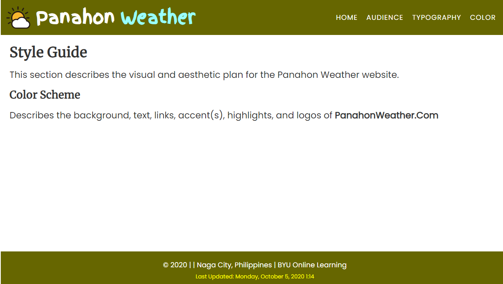
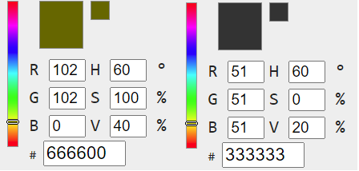
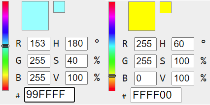

Style Guide
Color Scheme
Describes the background, text, links, accent(s), highlights, and logos of PanahonWeather.com.
Overall Website Design
Figure 1 - Example Page for overall color scheme visualization. This is the actual color scheme representation of PanahonWeather.com. This design is the same throughout the different pages to provide consistency when viewing the website.
Primary Colors:
Figure 2 - Shows the RGB codes and visual representation of the primary colors used on the website.
#666600 - Was used as the main background color of our headers and footers. This color was approved because it contrasts well to our logo; the sun image and the Panahon Weather text logo. It blends well to the image which has a bright sunny yellow color and black sunrays. This color also made the website look simple, so it is easy to look at.
#333333 - This color was used mainly on our main page. This color was used on the headlines and paragraphs on articles on the page. This color was used to substitute black because black is too much of a strong color. This color is lighter than black which approved to again make our website easy to read.
Secondary Colors:
#99FFFF - This color was used to provide contrast the brand name's text logo design. This color fits the white text and the dark yellow background of the header and footer.
#FFFF00 - This color was used to provide a warmer accent on the footer to easily notice the update time of the webpage.
